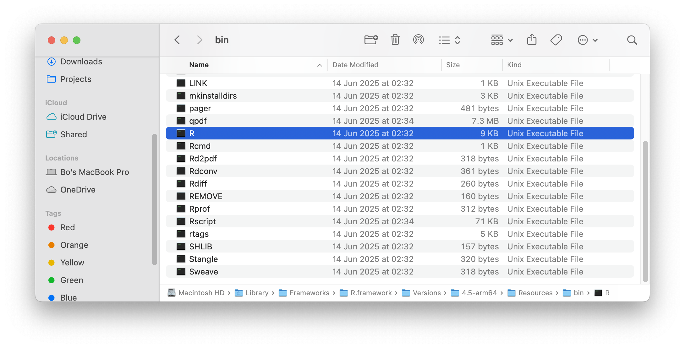
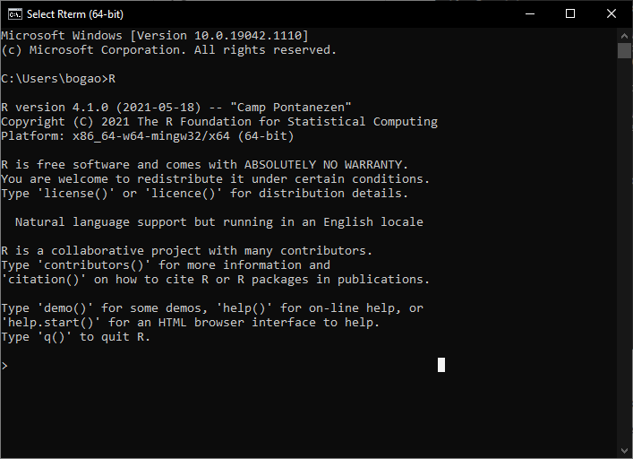
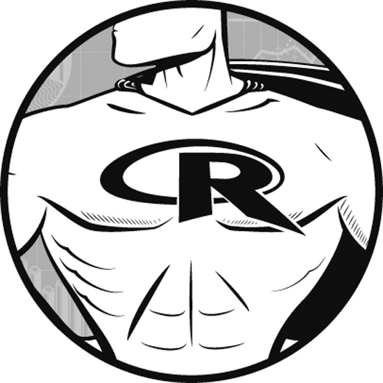
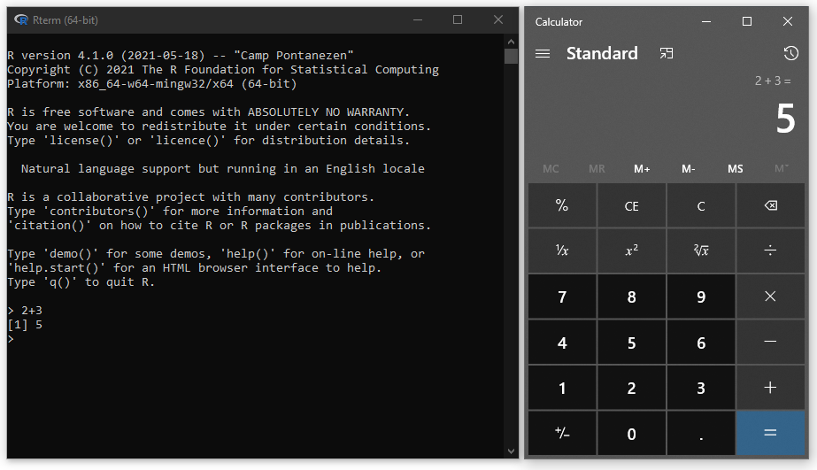
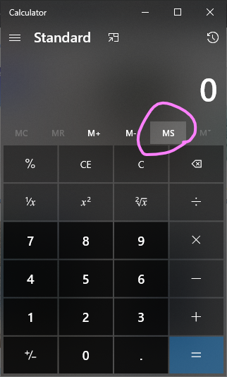
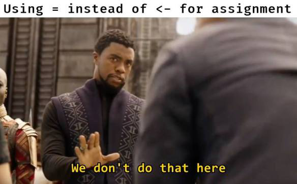
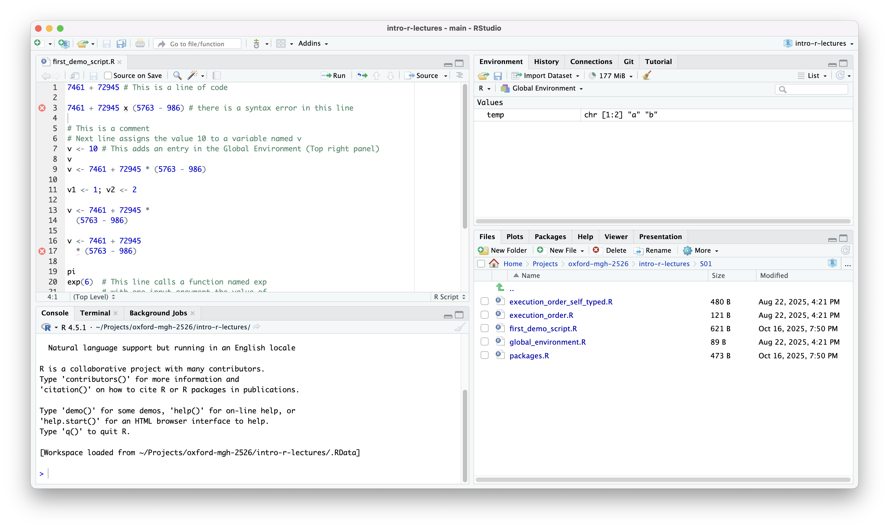

flowchart LR
user["User"] --> r_base["Base R"]
r_base --> cpu["CPU"]
%% ide@{ shape: cross-circ, label: "Summary" }
user --> IDE
IDE --> r_base
subgraph IDE["IDE Options"]
direction LR
ide_1["RStudio"]
ide_2["VS Code"]
ide_3["Positron"]
ide_4["..."]
ide_1 ~~~ ide_2
ide_3 ~~~ ide_4
end
1 Get Started
Elements of the R software development environment
Outline
We begin by introducing key elements of an R software development environment (Figure 1.1), and the key questions we want to answer in this chapter are:
- Base R
- What is Base R?
- How to install Base R?
- Where is Base R post-installation?
- Use R as a calculator
- Arithmetic operators
- Assignment operator
- Integrated Development Environment (IDE)
- What is an IDE and why you want one?
- What IDEs are available for R?
- RStudio
1.1 Install Base R
Tip
When you travel to a foreign country where you don’t speak the local dialogue, in order to communicate with the local people, you will need to employ an interpreter. We are in a similar situation here: in order for you to talk to your computer in the R language, we need to equip it with an interpreter, and this interpreter comes in the form of a software package that you can install on your computer, and is referred to as Base R.
R is a cross-platform open-source software environment for statistical computing and graphics. R is primarily written in C, Fortran, and R itself. The R software environment is a GNU package, and is freely available under the GNU General Public License. (The R Foundation 2025)
Precompiled binary distributions of the base system of R (also referred to as Base R) are available for download and install from https://cloud.r-project.org/ for different operating systems (OS). For MGH students with course-issued laptops, on that page:
- MacBook Air laptops: Select “Download R for macOS”, then click the “R-4.x.x-arm64.pkg” link on the page (Apple silicon)
- Dell (Windows) laptops: Select “Download R for Windows”, then click the “Download R-4.x.x for Windows (xx megabytes, 64 bit)” link on the top of the page
Open the downloaded file and follow the instructions on screen to complete the installation of Base R.
1.1.1 Where is R now on my computer?
Once the installation process has completed, you are now ready to talk to your computer in the language R. First, you need to find the R interpretor that was installed on your computer as a result of the installation process. This interpretor comes in different names and is saved at different locations on your hard drive depending on which OS you have:
On macOS (and other Unix-based OSes such as Ubuntu), chances are that you can open a terminal (see Section A.2) and execute the R command without further configuration, as shown in the video below.
What you can see in this video is that we:
- Opened a new (OS-level) terminal by searching and selecting for the “terminal” application through the “Spotlight search” functionality on macOS (function on the
F4key of your keyboard). - Typed the command R on the command line (prompted by the
$character) and pressed theEnterkey. - We are now in an interactive R session. The terminal-like interface (with
>being the prompt character) we are looking at is referred to as the R terminal or R REPL which is our gateway to talk to the computer via the R interpreter which we just installed on this laptop. - In this R session, we typed a couple of R commands creating and displaying a vector named
a, before exiting the R terminal by calling theq()function.
If everything works fine up to this step, then well done, you’ve installed R correctly. If you wish to find out more about exactly where R is installed on your hard drive:
- Having exited the R session, we are now back in the (OS-level) terminal prompted by the
$character. Here we can issue thewhich Rcommand that tells us what file is theRcommand associated with. In the output from thiswhichcommand, we can see that the file is located at/usr/local/bin/R. - We looked further into this file with the
lscommand which tells us that the/usr/local/bin/Rfile is linked (see Symbolic link) to the file at/Library/Frameworks/R.framework/Resources/bin/Rwhich where the R base package and all associated files are installed. - If you navigate to that location, you will find executable files such as
RandRscript. See screenshot below showing the contents of thebindirectory, and note that the directory actually further links to the/Library/Frameworks/R.framework/Versions/4.5-arm64/Resources/bindirectory.

R location on macOSIf at step 2, you get R: command not found in return, that means R’s bin directory is not included on the PATH (see PATH (variable) ).
To run R code on Windows,
- Locate
R.exe
By default, the R base package is installed at C:\Program Files\R\R-4.x.y for version 4.x.y on Windows. Open your file explorer to that location, and you will find an executable file named R.exe in the bin directory.

R.exe location- Open
R.exe
Double click on R.exe will open a window named Rterm which is an [REPL] for the R environment.

Rterm- Update
Path
In order to access R.exe quickly on the command line, we add C:\Program Files\R\R-4.x.y\bin to the operating system (OS)’s PATH environment variable. On Windows,
- Click the Windows key and type “environment”
- Select “Edit the system environment variables”
- Click the “Environment Variables” button
- Double-click “Path” from the “User variables for ***” list
- Click “New”, and type “
C:\Program Files\R\R-4.x.y\bin”

Path environment variable- Command line access
Now, when you type R and press ENTER on the command line prompt, you will be in R’s REPL straightaway. 
1.1.2 What is Base R?
The process that you just executed completed your installation of what we refer to as Base R. Base R is synonymous with “R’s standard library” as given by (The R Core Team 2025). It is a collection of core packages of the R programming language. Authored by the R Core Team, it defines the R language and includes functions that perform tasks that are essential for a statistical data processing system.
A full list of packages included in Base R is given by (The R Core Team 2025). This list can be considered to be of two parts:
- The package called
base, which is the R Base Package. A full list of what functions are defined inbaseis available on this page. - Other packages that extends the
basepackage in various fields of application. Examples include packages such asgraphics,datasetsandstatswhich are frequently referenced in R projects.
In this book, we give example on the use of:
- Basic (vector) data types such as double, integer, character, and logical type values
- Arithmetic, relational, and logical operations
- Control flow constructs such as if-else and for-loop
- Heterogeneous data containers such as
data.frame - Plotting with functions such as
plot(),lines(), andboxplot() - Statistical processes such as
runif(),approx(), andlm()
Base R is comprehensive in functionalities. However, over the years, many non-Base packages has emerged as superstars of the R ecosystem. A collection of these packages is now known under the umbrella of tidyverse. This book is limited in length to cover all non-base packages. We give examples on packages such as ggplot2 from tidyverse. And students are encouraged to read more on tidyverse in their own time, and from other modules of the course.
1.2 Use R as a calculator
When you come across complex mathematical expressions such as 7461 + 72945 x (5763 - 986) = ?, do you feel the urge to find a pen and a paper? Do you double check with a calculator? or simply read the question to Siri? Or, perhaps, let the mighty R solve it for you?

Computers are invented to do calculations, and programming languages are a means for us (the user) to talk to the computer. So, can we ask the computer (by speaking R) to do some calculations for us? If you type in “1 + 2” on your calculator and hit “=” you will get “3” displayed on the screen, can we do that in R too?
In our first encounter with R, we start with the most basic operations you can perform in R. Let’s start from the beginning and dump your calculator for the mighty Rrr!
1.2.1 REPL / Console
A REPL (read-eval-print loop) is an environment within which a programmer may interact with the computer using a programming language associated with that REPL. It is a feature often provided with interpreted languages ([Compiled vs Interpreted]) such as R, Python, and Perl for fast and direct interaction. Command line terminals/shells are the most common examples of REPL. A common calculator can also be considered as a REPL.
All commands included in this session can be executed on R’s REPL. In RStudio, the REPL is given under the “Console” tab.

1.2.2 Assignment operator <-
The purpose of the assignment operator <- is to assign a value/function definition at its right hand side (RHS) to a name which sits to its left hand side (LHS). This is similar to the function of the MS (memory save) key on a calculator. The value assigned to this name can then be recalled by calling the name.

a <- 65 # a value 65 is saved in the computer's memory, and that piece of memory is given a name "a"
a + 31 # recalls the value by referring to its name
a # typing the name in the REPL get its value printed
# you can also use `print` or `cat` to find out the value of a name/variable
print(a)
cat(a)
# note the difference between print and cat
print("ab\ncd")
cat("ab\ncd")
# format your output to be more meaningful
print(paste0("a=", a))Practically speaking, you can use = for assignment in R, but the <- operator is more commonly used in the R community. The use of <- is a convention that helps to distinguish between assignment and declaring the association between function arguments and their values. For example, in the function call mean(x = c(1, 2, 3)), the x = c(1, 2, 3) part is not an assignment but rather an argument specification for the mean function. Using <- for assignment and = for argument specification helps to avoid confusion and improve code readability.

1.2.3 .R script
On a calculator, all the memories are exclusively used by the calculator. In contrast, R has to share the computer’s memory with other applications that are also running on that computer.
When we start a new R session (on macOS: execute /usr/local/bin/R; on Windows: double click the R.exe file), a new application session is started and a new environment is created in the computer’s memory (the RAM module on your laptop) by the operating system (OS) to serve this new application session. Rterm/REPL gives the user an interface through which we can interact with this environment. An assignment operator let us name a section in the computer’s main memory (RAM) to hold any work we are doing.
As soon as the session is closed, the OS assumes everything needed doing has been done and free up all the memories used during the session for use by other applications. Therefore, everything we typed in the REPL is lost from the RAM. The next time we open the REPL, if we want to use reproduce the work we did in the previous session, we will need to type all the codes that we executed in that session. This is when we want to create a .R file (a.k.a an R script) to keep a record of all the codes we created.
To help make the process easier, you may use a function named source that runs everything saved in an R script and try to recreate the same environment that the previous session was in.
This is equivalent to opening the script in an IDE like RStudio and running everything in the script. In RStudio, you can use the following shortcuts to run everything in a script:
- macOS:
CMD + A, Run, run everything, ignores error.CMD + A, Source, run everything, stops at error.- Windows:
CTRL + A, Run, run everything, ignores error.CTRL + A, Source, run everything, stops at error.
1.3 Install an IDE
An integrated development environment (IDE) is an essential tool to develop and maintain software projects. For R developers, there are several good options available:
- RStudio is perhaps the most well-known IDE for R developers. It works out-of-the-box and has an interface arrangement that’s optimised for R showing plots and the global environment alongside to the code. It now also works with Python.
- Visual Studio Code (VS Code) is language-agnostic, meaning that you can use it to manage projects written in pretty much any programming language there is. According to (Stack Overflow 2025), it is by far the most popular IDE used by developers anywhere on planet Earth. Some extensions are needed to customise behaviours required for R projects.
- Positron’s objective is to combine the best of RStudio and VS Code, in that it is developed and maintained by posit which made RStudio, and is technically a variant (fork) of VS Code.
- Other IDEs are available.
We recommend RStudio to those new to programming, i.e. R is your first computer programming language, as it has a panel arrangement that displays everything at the same time.
For those who has previous experiences with programming languages, especially those who used VS Code for other projects, we recommend that they stick to VS Code for it does everything RStudio does and lets the user focus more on the code.
We have tried Positron ourselves from 2024-25 in a couple of projects of our own. It fixes issues that VS Code have at times with displaying plots and shiny apps. However, to our experience, it can be a bit laggy when more data is being worked on. It is a promising project that we are keeping an eye on and may adapt for future developments.
Note
On the MGH module, our demonstrations are done using RStudio. The students may find lecturers from other modules of the course demonstrating with VS Code later on in the course. So some familiarity with both RStudio and VS Code are recommended.
1.3.1 RStudio
RStudio is an IDE that’s designed to provide a user-friendly interface to the features and tools for projects using R. A free desktop version can be downloaded from here. Click the DOWNLOAD RSTUDIO DESKTOP FOR xxx button under “2: Install RStudio” section on the right-hand side of the page. You’ve already completed the steps needed for “1: Install R” in Section 1.1.
Note that R and RStudio refer to different things. RStudio is one of the tools available for managing an R project. Alternative code editors such as Sublime Text and Visual Studio Code are also available.
The default layout of RStudio has four sections:
- Top-left: Code editor
- Top-right: Run time tools
- Bottom-left: REPL, system terminal
- Bottom-right: File explorer, plot viewer, etc.

5 minutes: Find out how to switch between panels in RStudio using only your keyboard.
1.3.2 VS Code
Visual Studio Code (VS Code) is a free, open-source code editor developed by Microsoft. It is a powerful and versatile tool that supports a wide range of programming languages, including R. To use VS Code for R development, you will need to install the R extension for VS Code, which provides features such as syntax highlighting, code completion, and debugging support for R. You can download VS Code from here, and install the R extension from the Extensions Marketplace within VS Code.